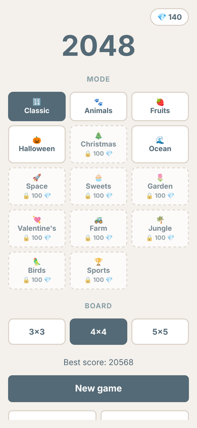
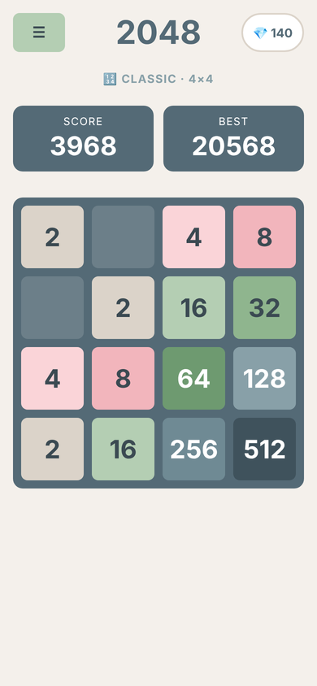
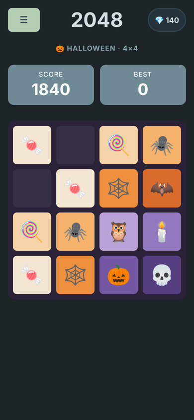
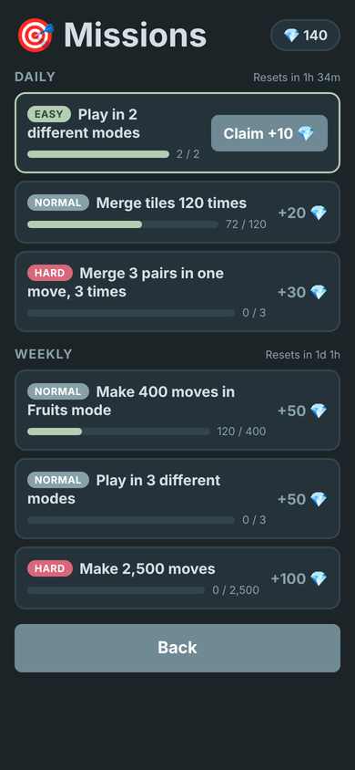

2048 - aplikacja mobilna




O projekcie
Mobilna gra logiczna inspirowana 2048: przesuwasz kafelki i łączysz dwa takie same w kolejny. Napisałam ją w HTML, CSS i JavaScript bez żadnych frameworków, a potem zamieniłam w aplikację na Androida za pomocą Capacitora.
Gra ma trzy darmowe tryby (Klasyczny, Zwierzęta i Owoce), 11 motywów do odblokowania, trzy rozmiary planszy (3×3, 4×4 i 5×5) oraz misje dzienne i tygodniowe, za które dostaje się diamenty. Są też płynne animacje, dźwięki tworzone w kodzie (Web Audio API), tryb jasny i ciemny, dwa języki oraz automatyczny zapis po każdym ruchu.